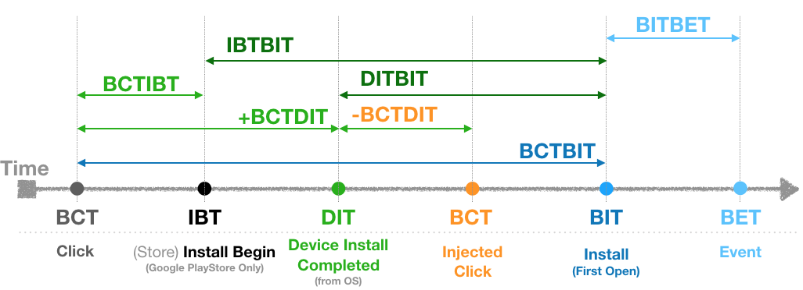
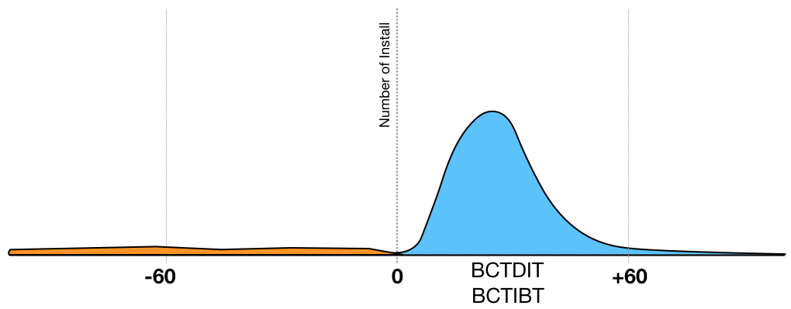
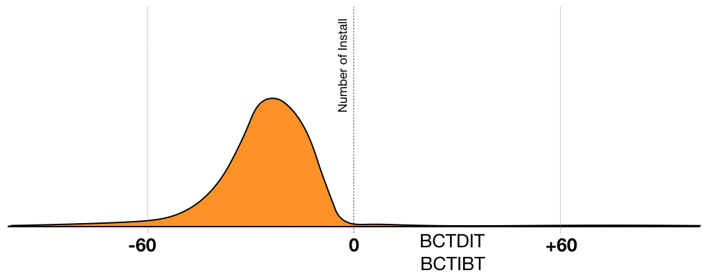
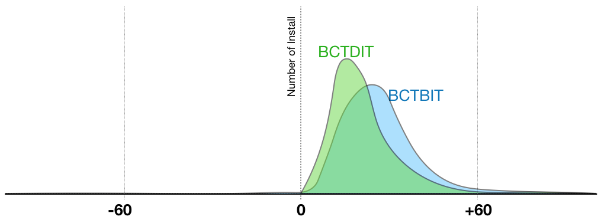
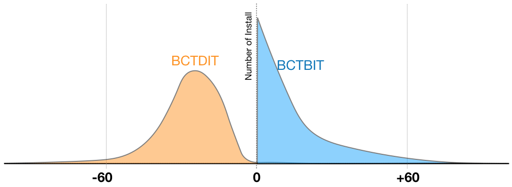

Custom Fraud Analysis Guide¶
- Author : Bohyung Son
- Last updated: Oct. 31 2019
Table Of Content¶
- Introduction to Custom Fraud Categories
- Timestamps and Lag-times Used for Analysis
Introduction to Custom Fraud Categories.¶
Normal¶
- Devices currently regarded as normal device.
- Fraud detection logic is keep being improved, so some normal devices could be categorized as suspicious or fraudulent in the next analysis.
Custom Fraud Rule (install only)¶
- Installs marked as suspicious by custom fraud rule which was enabled by advertiser.
Country Conflict (install only)¶
- Installs marked as suspicious by country conflict fraud rule which was enabled by advertiser.
CI:-100~0 (install only)¶
- Installs attributed(hijacked) to the publishers by click injection fraud.
- Detection logic is based on the BCTDBT which is computation of time difference between click timestamp and download button click timestamp.
- Positive BCTDBT means matched click is prior to app download, and negative value means downloading is started prior to the matched click.
- Click injecting fraudsters install malware's on devices in advance, and fire clicks as soon as the malware detects new app installation. By doing so, the injected click take credit for the install as a last click. So most of click injected installs, clicks are fired right after device installation or app download start.
Emul¶
- Devices recognized as either emulator or abnormal device(SDK Spoofing) or fraud tool by various data points.
- May some normal devices could fall into this category, but this volume would be a tiny fraction of the total because current detection logic is conservative.
- For some (mostly MMORPG) games' normal users use emulators for easier gaming control. Please be aware that some real users emulators could be categorized as 'Emul' along with fraudulent devices.
SusDevice¶
- Devices recognized as suspicious using various data points like brand, model, carrier, language, and etc.
- It does not mean all the devices in this category are fraud. If small proportion of these devices are evenly appear across all the publishers, you can regard it as normal. But noticeably high proportion of devices appear from some publishers or sub-publishers, many of them could be fraudulent devices.
- It is recommended to set baseline as proportions of these devices from internal advertising channel and trusted publishers
FP:BCTBIT>1H (Install Only)¶
- It is strongly recommended to set fingerprint window of all the publishers to 1 hour
- Fingerprint installs having greater than 1 hour of click to install lag-time are categorized as this category.
- This is a characteristic grouping of fingerprint installs, and does not mean each install falls into this category is fraudulent.
- For normal publishers, installs fall into this category are usually less than around 5%, and these installs are not fraudulent.
- It is recommended to set baseline as proportions of these devices from internal advertising channel and trusted publishers.
- If small proportion of these devices evenly appear across all the publishers, you can regard it as normal. But noticeably high proportion of devices appears only from some publishers or sub-publishers, many of them could be fraudulent devices.
FP:CS Suspicious (Install Only) N/A for now.¶
- Among fingerprint installs which are suspicious as click spamming.
- This is a characteristic grouping of fingerprint installs, and does not mean each install falls into this category is fraudulent.
- For normal publishers installs fall into this category are usually less than around 5%, and these installs are not fraudulent.
- It is recommended to set baseline as proportions of these devices from internal advertising channel and trusted publishers.
- If small proportion of these devices evenly appear across all the publishers, you can regard it as normal. But noticeably high proportion of devices appears only from some publishers or sub-publishers, many of them could be fraudulent devices.
- If volume of both "FP:TCTTIT>1H" and "FP:CS Suspicious" are noticeably higher than the other publishers, this is stronger indication of click spamming/flooding.
IBT:Null (Android Install Only)¶
- download begin timestamp, which is collected from Google Play Install Referrer Library, is not collected.
- This timestamp is supported from Google Play Store v8.3.78 which was released in Oct. 2017. So missing install begin timestamp means Play Store app is not updated more than 1 year, so these devices are most likely not real user's ones.
NOTE:¶
- For each category, if per publisher or sub-publisher proportions are lower than 5~10% and appear evenly across all the publishers, we could regard it as normal. I recommend to to set baseline using proportions of the internal advertising channel and trusted publisher. If noticeably high proportions are detected from some publishers or sub-publishers, most likely many of these devices are fraudulent.
- Apps in some verticals could show higher proportions on some fraud categories.
- Ex1) Travel app: Usually higher proportion of country conflict.
- Ex2) MMORPG games: Some normal gamers use emulator on desktop/laptop for easier game control.
Timestamps and lag-times used for Analysis¶

Timestamps¶
-
BCT (Branch Click Timestamp) : Timestamp of matched click.
- Custom Export API Log field name: session_datetime
-
IBT (Store Install Begin Timestamp) : Install begin timestamp from Google Play Store. The time user clicked install button. (Device time)
- Custom Export API Log field name: download_date
-
DIT (Device Install Timestamp) : The time app is installed on the device. (Device time)
- Custom Export API Log field name: install_date
-
BIT (Branch Install Timestamp): The time app is first opened
- Custom Export API Log field name: created
-
BET (Branch Event Timestamp) : The time event is sent.
- Custom Export API Log field name: created
Lag-times¶
-
BCTBIT : Lag-time between BCT and BIT
-
Formula: BIT - BCT
-
-
BCTIBT : Lag-time between BCT and IBT
-
Formula: IBT - BCT
-
-
BCTDIT : Lag-time between BCT and DIT
-
Formula: DIT - BCT
-
For the most of the installs this values are positive, but some installs could have negative values. Some normal users could install apps, but do not open the app. If the users first open the app later after ad click, then the lag-time is negative.
- For the click injected installs, clicks are fired as soon as device installation is detected by malware, so most of the lag-times will be concentrated between -100 and 0. Only a tiny fraction of normal installs could fall into this range.
-
-
BITBET : Lag-time between BIT and BET.
-
Formula: BET - BIT
-
This lag-time is used to analyze user's post-install behavioral pattern.
-
Sample Charts¶
BCTIBT/BCTDIT Chart¶
Normal Installs¶
- All most all of installs are create after click, so most of installs lag-time is positive. 
Click Injected Installs¶
- Once app is installed on the device, malware fires click as soon as possible to inject click before user's first app open, so most of clicks are fired after app's installation on the device. 
BCTDIT & BCTBIT Chart¶
- BCTBIT chart is a typical "CTIT" and "Click to Install" lag-time chart.
Normal Installs¶
- Green area is normal installs in BCTDIT chart.
- Blue area is normal installs in BCTBIT chart.
- Similar distribution, but a bit logger lag-time, because app is first opened after installation on the device. 
Click Injected Installs¶
- Orange area is click injected installs in BCTDIT chart.
- Blue area is click injected installs in BCTBIT chart.
- Click injected installs already installed on the device before the clicks, so first opens surge right after click. 